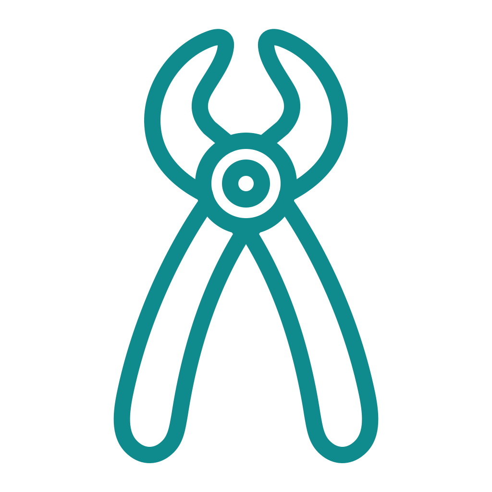
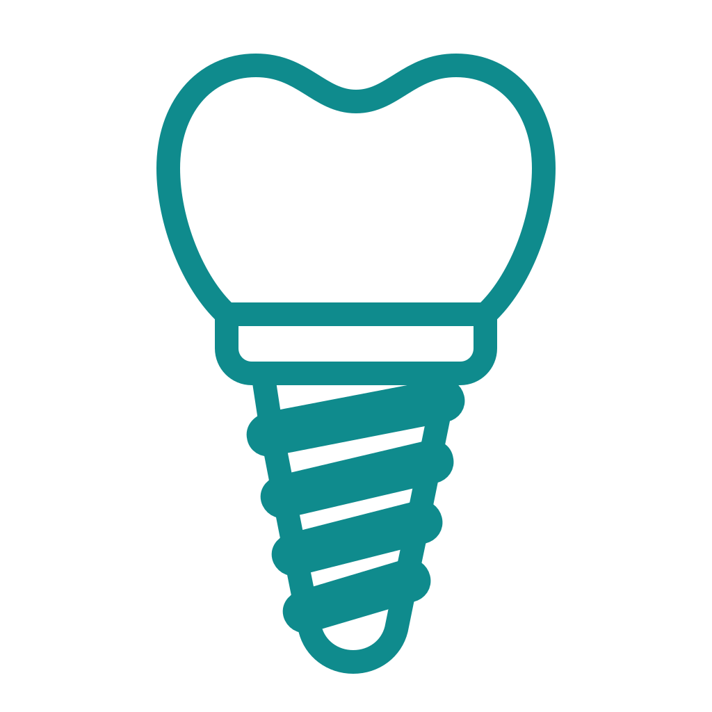
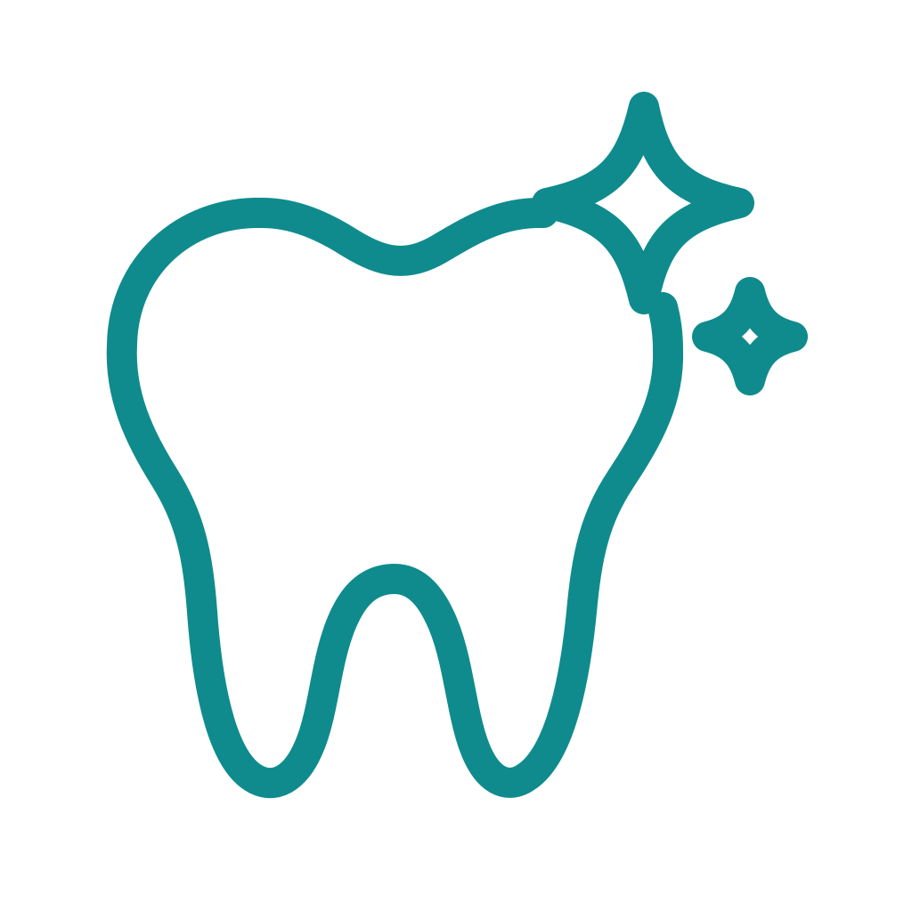
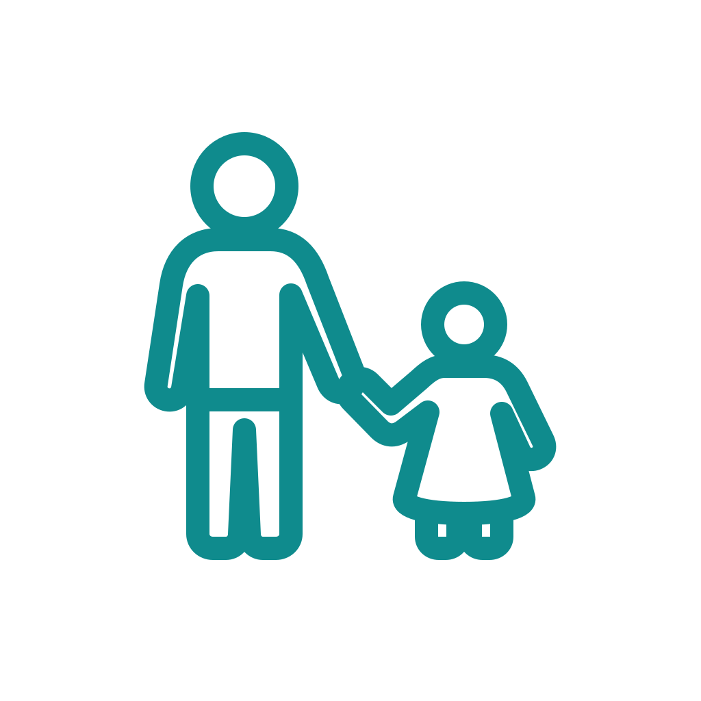

Naše uslugeOur services
Sve što vam treba za zdrave zube, od redovne kontrole do hirurških zahvata i hitnih intervencija.Everything you need for healthy teeth, from routine check-ups to surgery and emergency care.
Hitna stomatologijaEmergency dentistry
Zubobolja ne bira vreme. Zato primamo hitne slučajeve svaki dan, uključujući večeri i vikende, i trudimo se da vas primimo što pre.Toothache doesn't pick a convenient time. We take emergencies every day, including evenings and weekends, and aim to see you as soon as possible.
- Smirivanje jakog bola i lečenje upaleRelief from severe pain and treatment of inflammation
- Pomoć kod otoka i infekcije zubaCare for swelling and tooth infection
- Zbrinjavanje slomljenog ili ispalog zubaTreatment of broken or knocked-out teeth
- Privremena i trajna sanacija izgubljenih plombi i krunaTemporary and permanent repair of lost fillings and crowns
Opšta stomatologijaGeneral dentistry
Redovna nega je najbolji način da zadržite zdrave zube i izbegnete složene zahvate. Prvo uvek pokušavamo da sačuvamo prirodan zub.Regular care is the best way to keep your teeth healthy and avoid complex procedures. We always try to save the natural tooth first.
- Pregled i dijagnostikaExamination and diagnostics
- Plombe i lečenje karijesaFillings and cavity treatment
- Lečenje kanala korenaRoot canal treatment
- Uklanjanje kamenca i profesionalno čišćenjeScaling and professional cleaning

Oralna hirurgijaOral surgery
Kad se zub ne može sačuvati ili zahvat zahteva hirurški pristup, radimo ga precizno i uz kvalitetnu anesteziju, da proces bude što komforniji.When a tooth can't be saved or a procedure needs a surgical approach, we perform it precisely and with effective anesthesia for maximum comfort.
- Vađenje zuba, uključujući umnjakeTooth extraction, including wisdom teeth
- Resekcija korena zubaRoot-end resection
- Zbrinjavanje infekcija i hirurških komplikacijaManagement of infections and surgical complications
- Saveti i nega posle zahvataAftercare advice and follow-up

ImplantatiDental implants
Implant je trajno rešenje za zub koji nedostaje. Ugrađujemo ih samo tamo gde su zaista potrebni, uz plan i cenu unapred.An implant is a lasting solution for a missing tooth. We place them only where truly needed, with a plan and price upfront.
- Procena kosti i plan terapijeBone assessment and treatment plan
- Ugradnja implantataImplant placement
- Protetska nadoknada na implantuProsthetic restoration on the implant
- Kontrole i održavanjeFollow-up and maintenance

Estetska stomatologijaCosmetic dentistry
Osmeh koji izgleda prirodno i svež. Estetski zahvati prilagođeni su vašim zubima, bez preterivanja.A smile that looks natural and fresh. Cosmetic work is tailored to your teeth, without overdoing it.
- Beljenje zubaTeeth whitening
- Estetske plombeAesthetic fillings
- Korekcija oblika i boje zubaCorrection of tooth shape and colour
- Saveti za održavanje belog osmehaTips for keeping a bright smile

Deca i porodiceKids & families
Prve posete formiraju odnos deteta prema stomatologu. Zato je pristup strpljiv, nežan i bez žurbe.First visits shape a child's relationship with the dentist. That's why our approach is patient, gentle and unhurried.
- Pregledi i preventiva za decuChildren's check-ups and prevention
- Lečenje mlečnih i stalnih zubaTreatment of baby and permanent teeth
- Termini za celu porodicuAppointments for the whole family
- Saveti roditeljima o nezi zubaAdvice for parents on dental care
Niste sigurni šta vam treba?Not sure what you need?
Opišite nam problem i reći ćemo vam kako dalje. Za cene, pozovite ili pošaljite upit, a na pregledu dobijate jasnu ponudu.Describe the problem and we'll tell you the next step. For prices, call or send an enquiry, and after the exam you get a clear quote.
Treba vam stomatolog danas?Need a dentist today?
Otvoreni smo svaki dan do 23:30. Pozovite nas ili pošaljite upit.We are open every day until 11:30 PM. Call us or send an enquiry.